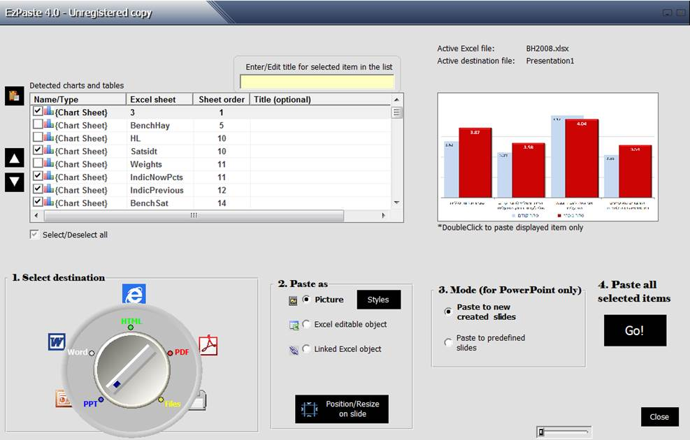
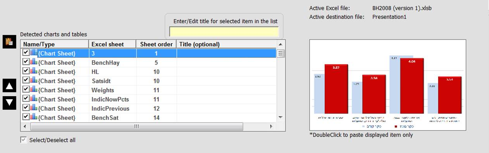
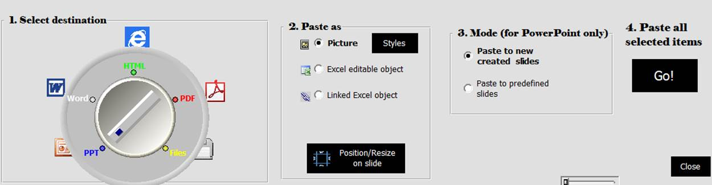
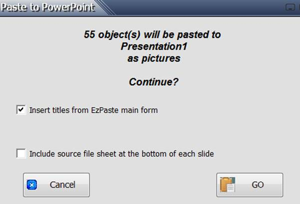

Let's say that your workbook contains 50 charts and named ranges and that you want to copy 35 of them at once to a new PowerPoint while each of the selected items should be copied to a new slide in certain order and in a certain format
1. When you click on the "Control center" on EzPaste toolbar, a form will be loaded which will automatically display the list of all the 50 charts and named ranges found in the workbook

2. You check the items to paste and set them in the required pasting order

3. You select the application destination (PowerPoint in our case), the pasting format and the PowerPoint mode (to new created slides or to predefined slides numbers in an existing presentation) then click Continue

4. A dialog box asking for confirmation will be loaded with some further customization parameters
